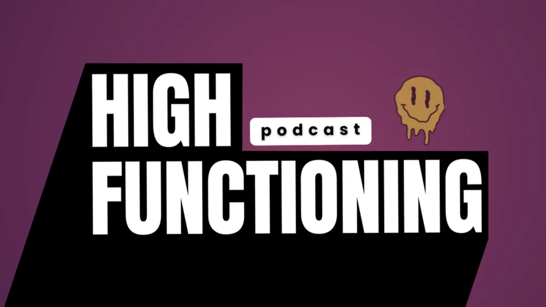

Case Study · Media Production

100+ episodes shipped with a two-person team.
How the High Functioning Podcast grew from 41 to 31,000+ monthly views — by treating production and systems as one job, not two. Still shipping weekly.
About the show
"Real Conversations Beyond the Highlight Reel."
High Functioning is a B2B operator-focused podcast hosted by Jason Reposa — founder & CEO of Good Feels, a Massachusetts cannabis-beverage company. Single-guest, 55-to-75-minute sit-downs with entrepreneurs, operators, scientists, and regulators about what it actually takes to run a business in a heavily regulated industry — real numbers, real playbooks, real failure stories.
Released weekly as both audio and YouTube video. Cannabis industry by subject, but the work is production: long-form interview production, tactical packaging, and the pipeline behind it.
The problem
The show was slow, inconsistent, and not growing — and the team couldn't fix any of that by working harder.
Every episode was a fresh manual edit. Output quality drifted between releases. Caption passes got skipped under deadline. Social clips shipped days late, if at all. The result was a 41-views-per-month audience and a two-person team that already felt overextended just keeping the recording cadence.
Booking better guests wouldn't solve it. Posting more wouldn't solve it. The bottleneck was that nothing about post-production was repeatable.
What I do on the show
I run the show end to end — booking, editing, captioning, packaging — and built the pipeline around that work so the next episode takes a fraction of the time of the last one.
- Booking & producing — guest outreach, scheduling, pre-interview, run-of-show.
- Editing & mixing — multi-camera cut, color pass, full audio post on every episode.
- Captions & accessibility — caption pass and subtitle QC on every release.
- YouTube packaging — thumbnails, titles, social clips, end screens — the publish-side work that converts views into a growing channel.

The pipeline I built
A React + Remotion render architecture that turns a raw episode into publish-ready output without anyone re-opening a timeline.
-
01
Transcript ingestion
The raw transcript is the source of truth. Once an episode is recorded, its transcript flows into the pipeline as structured data, not a Word doc someone has to read.
-
02
Schema-validated render contracts
Every render input — episode meta, segment timing, guest name, on-screen copy — is validated by a Zod schema before anything renders. A single typo doesn't ship a broken episode; the pipeline rejects it before it costs an hour of waiting.
-
03
Programmatic clip rendering
The Remotion compositions take transcript segments and render them into captioned social clips automatically — Instagram, TikTok, YouTube Shorts cuts produced from one source pass instead of three manual edits.
-
04
Automated lower-thirds & graphics
Guest lower-thirds and broadcast overlays render from the same data — no After Effects render queue, no per-episode hand-build. The graphics layer scales with the show because it has zero per-episode labor.
The result
Why this matters for the next role
Most media teams treat production and systems as two different jobs. That split is exactly what creates the slow-and-inconsistent loop the High Functioning Podcast was stuck in — a small team can only edit so many timelines, and adding people only buys more drift.
The throughline of this case is that it took both: real production hands on every episode, and the system that took the repeatable parts off those hands. The 274K-view number is the proof, but the operational story is the actual asset — a published-on-schedule show that grew with a two-person team because the pipeline absorbed the work that doesn't need a human.
That's the shape of media operations I want to bring to a higher-ed media department, a healthcare training group, a podcast operation, or an L&D team: produce the work to a real standard, then build the system that makes the next round faster.